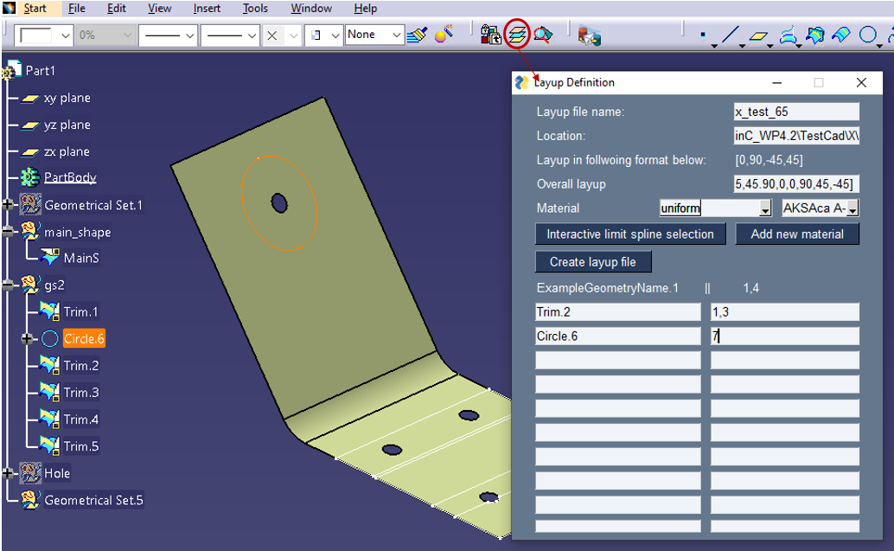

Introduction¶
This is set of scripts that form minimalistic layup definition. The intention is to replace expensive tools such as FibreSIM or CATIA CBA, while retaining the core functionalities.
The goal is to do this in an Open Source format with complete visibility of the Layup Definition standard and to allow for development for bespoke plug-ins. The Layup Definition should be compatible with all software, although for streamlining workflow additional development might be required for each new software.
The Layup Definition allows user to define layup, drop-offs, materials, fully and without excessive additional effort to the design workflow. This definition can then be in simulations or manufacturing.
The original basic UI is shown below as implemented in CATIA environment:
Why use/make this tool?¶
(Main value proposition)
No cost
Defines ply-drop-offs with a simple 3D point-cloud that forms a spline
Complete visibility of the definition; .txt file is both machine and human readable
Easy to build additional modules on top of it, making it more compatible than main OTSs (FibreSIM and CATIA CBA)
Universal file format - can be easily used at any stage of design